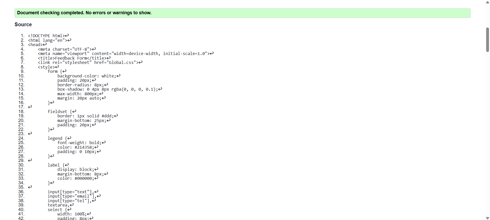
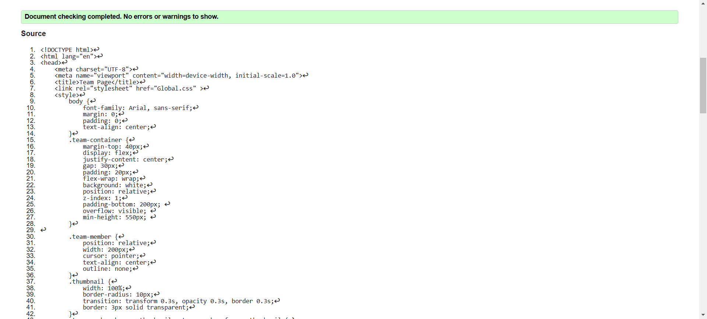
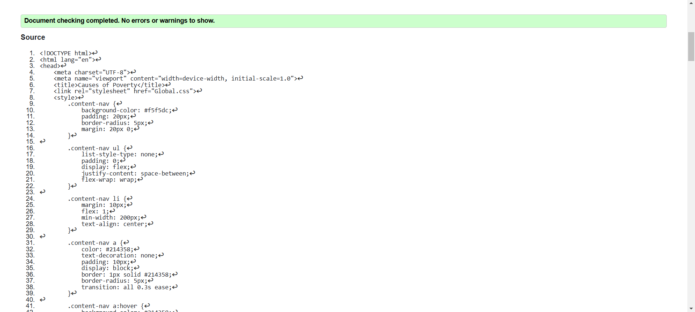

Feedback form validation report
The validation on the feedback form helped us determine major areas for improvement to enhance the user experience and data accuracy. To begin with, there were missing input field validations that might result in incomplete or erroneous submissions. By making fields mandatory and having clear error messages, we improved data integrity and user assistance. Further, cross-device testing of the form ensured that it was responsive and accessible. The validation also helped simplify the CSS so that the design was more organized and better-looking. The procedure emphasized the importance of validation while creating a smooth, user-friendly, and reliable feedback system.
Back to Page Editor page
Team Page validation report
I was able to identify and address a few small issues by trying to find mistakes on the Team Page. At first, some photos lacked alt text, which is important for screen reader users. In order to make the page easier to read and edit, I also made sure the HTML was properly formatted. Checking that everything appears properly on different devices and improving the design were two advantages of checking the CSS. I learned from this process just how important it is to write clean code so that the page works properly for everyone.
Back to Page Editor page
Content Page validation report
After reviewing the Causes of Poverty page, I focused on fixing small issues like adding alt text to images and making sure the HTML was organized and easy to read. I also checked that the page worked well on different devices by testing its design. This process showed me how important it is to write clean and clear code to make sure the page works properly for everyone and is easy to update in the future.
